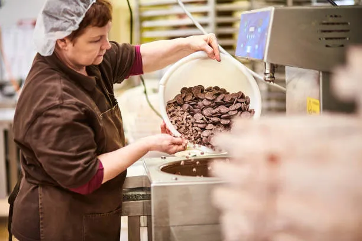
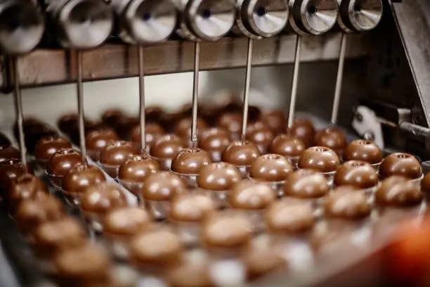

Os bombons de chocolate recheados surgiram na Europa, entre os séculos XVII e XVIII. No início, eram considerados produtos de luxo e consumidos principalmente pela nobreza, pois o chocolate era caro e pouco acessível.Com o avanço da indústria alimentícia e a popularização do chocolate, os bombons passaram a ser produzidos em maior escala. Assim, tornaram-se mais baratos e acessíveis para a população em geral.Atualmente, os bombons são encontrados em supermercados, lojas, confeitarias e são muito consumidos em datas comemorativas, como Páscoa, Natal, aniversários e Dia dos Namorados.

A fabricação dos bombons recheados pode ser feita de forma artesanal ou industrial. Na produção industrial, o processo segue etapas padronizadas para garantir qualidade e segurança alimentar.
Durante o processo, são feitos controles de qualidade para verificar sabor, textura, peso, aparência e conservação do produto.
